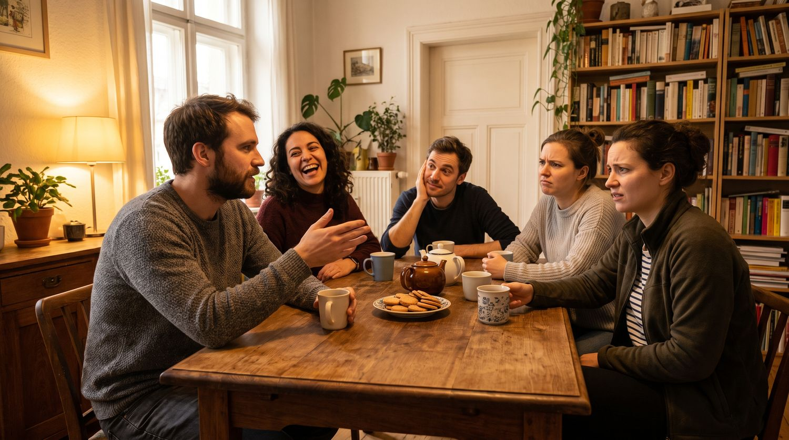

Die kleinen Wörter, die man nicht übersetzen kann — und die den Unterschied machen zwischen korrektem Deutsch und deutsch klingendem Deutsch.
🖼️ Einstieg🧩 Die Regel💬 10 Sätze🎚️ Ton-Regler✅ Üben🗣️ Sprechen
Zwei Sätze, eine Information
Am Küchentisch sagen alle dasselbe — und trotzdem klingt jeder anders. Genau daran arbeiten wir heute.

Ohne Partikel
Komm her.
Grammatisch richtig. Klingt aber nach Befehl — so spricht man mit einem Hund.
Mit Partikel
Komm mal her.
Dieselbe Information, ganz andere Wirkung: eine freundliche Einladung.
Ohne Partikel
Das ist nicht so schlimm.
Eine Feststellung. Man weiß nicht, ob sie tröstet oder abwertet.
Mit Partikel
Das ist doch nicht so schlimm!
Jetzt hört man: Ich sehe deine Sorge — und ich widerspreche ihr.
💡 Die eine Sache, die du dir merken musst: Modalpartikeln ändern nie, was gesagt wird. Sie ändern, wie es ankommt. Deshalb stehen sie in keinem Wörterbuch richtig drin — man lernt sie über Situationen, nicht über Übersetzungen.
🎧 Zum Einstieg: Lies die vier Sätze oben laut vor — erst die linke Spalte, dann die rechte. Hörst du den Unterschied in deiner eigenen Stimme? Genau den hören Deutsche auch.
Sechs Partikeln, sechs Aufgaben
Jede hat eine Rolle. Wenn du die Rolle kennst, brauchst du keine Übersetzung mehr.
mal
macht klein und freundlich
„Kannst du mal kurz helfen?“ — Es klingt nach einer Kleinigkeit, nicht nach einem Auftrag.
doch
widerspricht einer Sorge
„Das schaffst du doch!“ — Ich weiß, dass du zweifelst, und ich halte dagegen.
ja
das wissen wir beide
„Du kennst ihn ja.“ — Ich sage nichts Neues, ich erinnere nur daran.
eben
da kann man nichts machen
„Dann warten wir eben.“ — Ruhige Akzeptanz. Süddeutsch sagt man halt.
denn
macht Fragen freundlich
„Wo warst du denn?“ — Interessiert statt prüfend. Ohne denn klingt es nach Verhör.
wohl
ich vermute nur
„Er steht wohl im Stau.“ — Eine Vermutung, ohne das Wort vermuten zu benutzen.
📍 Wo stehen sie? Immer im Mittelfeld — nach dem Verb, nach den Pronomen, vor dem Rest. Nie auf Position 1, nie am Satzende, und sie werden nie betont. Ich habe dir doch gesagt, dass es regnet. ✓ · Doch ich habe dir gesagt … ✗
⚠️ Die häufigste Verwechslung: Dieselben Wörter gibt es auch als normale Wörter. Vergleiche: „Ich war mal in Berlin“ (irgendwann) gegen „Komm mal her“ (Partikel). Oder: „Doch! Das stimmt!“ (Widerspruch, betont) gegen „Das ist doch nicht schlimm“ (Partikel, unbetont). Betont ist ein normales Wort. Unbetont ist eine Partikel.
Zehn Sätze aus dem echten Leben
Zu jedem Satz die Situation, in der er fällt. Sag jeden Satz laut — mit der Stimmung, die das Bild zeigt.
🎲 Spiel dazu: Deck die türkisen Kästen ab. Eine Person liest nur den Satz vor, die anderen beschreiben die Situation: Wer sagt das, zu wem, und warum gerade so?
🎚️ Der Ton-Regler
Oben steht die Stimmung, unten der Satz mit einer Lücke. Welche Partikel trifft den Ton?
Diese Stimmung willst du treffen
Bereit?
—
0 von 0
💬 Danach im Kurs: Nehmt einen Satz und sprecht ihn mit allen sechs Partikeln durch. Reihum sagt jede Person, welche Stimmung sie gerade gehört hat.
✅ Üben
Vierzehn Aufgaben. Nach jeder Antwort steht da, warum es so ist — lies die Erklärung, auch wenn du richtig lagst.
0 von 14
🗣️ Selbst sprechen
Acht Situationen. Sag den Satz zweimal: einmal nackt, einmal mit Partikel. Die anderen sagen, welcher Satz freundlicher war.
Trösten
Deine Freundin hat die Prüfung nicht bestanden und ist am Boden. Was sagst du?
doch · ja · schon
Bitten
Du brauchst zwei Minuten Hilfe beim Tragen. Wie fragst du, ohne zu drängen?
mal · eben · kurz
Akzeptieren
Der Zug fällt aus, ihr müsst zwei Stunden warten. Wie sagst du es der Gruppe?
eben · halt · dann
Nachfragen
Dein Kollege war gestern nicht da. Frag freundlich nach — nicht wie ein Chef.
denn · eigentlich
Vermuten
Deine Nachbarin ist seit Tagen nicht zu sehen. Was vermutest du, ohne es zu behaupten?
wohl · vielleicht
Erinnern
Du hast etwas schon einmal gesagt und musst es wiederholen — ohne genervt zu klingen.
doch · ja
Einladen
Jemand steht unschlüssig in deiner Wohnung herum. Bitte ihn, sich zu setzen.
doch · mal
Widersprechen
Jemand sagt, Deutsch lernen sei zu schwer für ihn. Halt dagegen — freundlich.
doch · ja · eben
🔑 Redemittel: „Sag mal, …“ · „Das ist doch …“ · „Du weißt ja, …“ · „Dann eben …“ · „Wo bleibt er denn?“ · „Das wird wohl …“